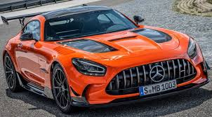

Mercedes-AMG GT Black Series je vrhunski sportski automobil, predstavljen 2020. godine kao najsnažniji AMG model do tada. Ima 4.0L V8 biturbo motor sa 730 KS i izuzetnu aerodinamiku, prilagođenu za stazu. Poznat je po impresivnim performansama – ubrzava od 0 do 100 km/h za oko 3 sekunde i neko vreme je držao rekord na Nürburgringu za serijske automobile. Ovaj model kombinuje ekstremnu snagu, laganu konstrukciju i trkačku tehnologiju, zbog čega je veoma tražen među kolekcionarima i ljubiteljima brzine.
